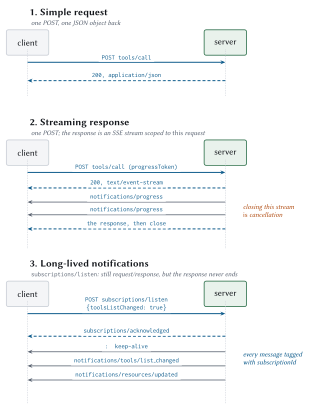
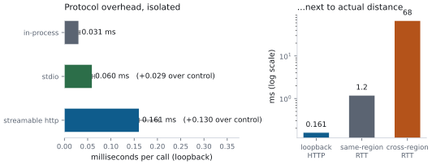
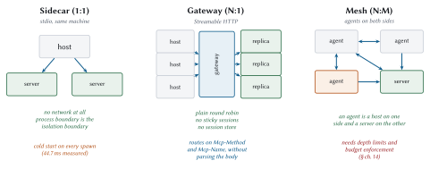

Building Blocks of the Transport
Rod had spent years being told about value in the abstract and wanted to see the actual figure on the actual page. This chapter is that demand, applied to MCP.
We are going to look at literal bytes on a literal connection, because every claim about performance from here on rests on knowing what is genuinely on the wire and what you merely imagined was there. I have found that most arguments about protocol overhead are settled in about ninety seconds by printing one request.
What a transport is, and why there are two
A transport is the answer to a boring question: how do the bytes get from the client to the server and back?
The protocol proper, everything in Chapter 2, says nothing about that. It describes messages: what a request looks like, what a result looks like, which fields are required. A transport is the binding that carries those messages over some actual channel.
MCP defines two.
- stdio
-
The client launches the server as a child process and they talk over the process’s standard input and output streams, the same two pipes a command-line program uses to read and print. Local only, by construction.
- Streamable HTTP
-
The server is a network service with one URL. The client sends HTTP POST requests to it.
There used to be a third, and Chapter B covers migrating off it.
Everything else in this chapter is the detail of those two, so it is worth saying up front what the choice actually turns on: stdio when the server runs on the user’s own machine, Streamable HTTP when it is shared. The rest is consequences.
JSON-RPC, and the two things MCP adds
Both transports carry the same messages, and the message format is JSON-RPC 2.0.
If you have not met it: JSON-RPC is a small, old, deliberately boring specification for calling a procedure over a network using JSON. It defines three message types and almost nothing else. No types, no schemas, no service definitions. It is about two pages long.
MCP uses it unmodified, which was a good decision made by people resisting the urge to design something.
The three message types
A request has an id, a method name, and parameters. It expects an answer.
{ "jsonrpc": "2.0", "id": 1, "method": "tools/call", "params": { ... } }A result comes back carrying the same id, so the client can match it to the request it sent. That matters because several requests may be in flight at once.
{ "jsonrpc": "2.0", "id": 1, "result": { "resultType": "complete", ... } }A notification has no id and gets no reply. It is fire-and-forget, used for things like progress updates where an acknowledgement would be pointless.
{ "jsonrpc": "2.0", "method": "notifications/progress", "params": { ... } }MCP adds exactly two rules on top of that:
result.resultTypeis required. Chapter 2 covered why: it lets a client tell which of several completely different result shapes it is holding before it parses the payload.Request ids must not be
null, and must be unique among requests you have issued and not yet had answered. Base JSON-RPC permits a null id; MCP does not, because a null id makes correlation ambiguous on a shared channel.
That is the whole extension. Everything interesting lives in the payloads.
Error codes, and the range you must not touch
When something goes wrong, the response carries an error member in place of result. A response has exactly one of the two:
{ "jsonrpc": "2.0", "id": 1,
"error": { "code": -32602, "message": "Unknown tool: nope" } }Those negative numbers are not arbitrary. JSON-RPC reserves the range -32768 to -32000 for itself, and within that leaves -32000 to -32099 for implementations to use as they see fit.
“As they see fit” worked out about as well as you would expect. Different MCP implementations picked overlapping codes for different meanings, so 2026-07-28 partitioned the space properly.
| Range | Status | Rule |
-32700, -32600 to -32603 |
JSON-RPC standard | Parse, request, method, params, internal |
-32000 to -32019 |
Legacy | Allocated before the policy existed. Do not allocate here, and do not assume any meaning |
-32020 to -32099 |
Reserved for MCP | Only the specification allocates here. Never emit an undefined code from this range |
Outside -32768..-32000 |
Yours | Put your application errors here |
Three codes are currently defined in the reserved range. Each carries enough information for the client to fix the request and try again on its own:
| Code | Name | What the client should do |
-32020 |
HeaderMismatch |
Refetch the tool list, since the schema may have changed, then retry with correct headers |
-32021 |
MissingRequiredClientCapability |
Read which capability was missing from the error data; declare it or stop |
-32022 |
UnsupportedProtocolVersion |
Pick a version from the supported list in the error and retry |
Two codes are retired and must never be sent again: -32002, which meant “resource not found” until this revision replaced it with the standard -32602, and -32042, which meant something for exactly one revision. Clients should still accept -32002 from older servers. Servers on this revision must not send it.
That asymmetry, accept the old, emit only the new, is worth internalising because it recurs everywhere in this book. Meridian has a test for this one, because it is exactly the kind of thing that rots quietly:
def test_retired_codes_are_never_emitted(self):
server = tiny_server()
seen = set()
for method, params in [("resources/read", {"uri": "x://y"}),
("tools/call", {"name": "nope"}),
("prompts/get", {"name": "nope"})]:
resp = server.handle(request(method, params))
seen.add(resp["error"]["code"])
self.assertNotIn(-32002, seen)
self.assertNotIn(-32042, seen)Streamable HTTP
One endpoint. POST only. Every JSON-RPC message is its own HTTP request.
That sentence is doing a lot of work, because it describes something quite different from what the same transport looked like a year ago.
Server-sent events, briefly
Before the flow diagrams, one piece of vocabulary, because it appears constantly from here on.
Most HTTP responses are a single body: the server sends it and closes. But a response can also be a stream, where the server holds the connection open and sends pieces over time. The format MCP uses for that is server-sent events, or SSE: a text format where each message is a line beginning data:, followed by a blank line.
data: {"jsonrpc":"2.0","method":"notifications/progress","params":{...}}
data: {"jsonrpc":"2.0","id":1,"result":{...}}
It is deliberately simple, it works through ordinary HTTP infrastructure, and it flows one way: the server pushes, the client listens. That last property is why the 2026 design uses it the way it does.
The three shapes of traffic

The first shape is an ordinary request and a single JSON response. The second is a request whose response is an SSE stream, used when the server wants to report progress before delivering the answer. Both are unremarkable.
The third deserves attention, because it is where the elegance is. A long-lived notification stream is an ordinary POST, to the same endpoint, whose response happens to be a stream that stays open. Its state belongs to that one request. Nothing about it is remembered by the connection underneath, which is why it survived the deletion of sessions without needing a replacement concept.
Required headers, and why they exist
Here is a genuinely new obligation in this revision. Every POST must carry these:
POST /mcp HTTP/1.1
Content-Type: application/json
Accept: application/json, text/event-stream
MCP-Protocol-Version: 2026-07-28
Mcp-Method: tools/call
Mcp-Name: assess_account_risk
{
"jsonrpc": "2.0",
"id": 1,
"method": "tools/call",
"params": {
"name": "assess_account_risk",
"arguments": { "accountId": "ACC-1042" },
"_meta": {
"io.modelcontextprotocol/protocolVersion": "2026-07-28",
"io.modelcontextprotocol/clientCapabilities": {}
}
}
}Look at what those three headers contain. Mcp-Method duplicates the method from the body. Mcp-Name duplicates params.name. MCP-Protocol-Version duplicates the version from _meta.
Duplicating data is normally a smell, so the reason is worth stating: it lets every piece of infrastructure between the client and the server do its job without parsing JSON.
A load balancer routes
tools/callto a compute pool andtools/listto a cache tier, using a header rule it already knows how to write.A web application firewall applies a strict policy to one tool name and a relaxed one to another.
Rate limiting works per method, which is the only granularity that means anything now that connections carry no state worth counting.
Your access logs become useful without a JSON parser in the log pipeline.
That is a real gain. It also creates a real hazard.
def _validate_headers(self, headers, message: dict) -> None:
"""Reject any disagreement between headers and body."""
method = message.get("method", "")
params = message.get("params") or {}
version_header = headers.get(HDR_VERSION)
if version_header is None:
raise errors.HeaderMismatch(f"Missing required header {HDR_VERSION}")
body_version = (params.get("_meta") or {}).get(KEY_PROTOCOL_VERSION)
if body_version is not None and version_header != body_version:
raise errors.HeaderMismatch(
f"{HDR_VERSION} header {version_header!r} does not match "
f"body value {body_version!r}")
method_header = headers.get(HDR_METHOD)
if method_header != method:
raise errors.HeaderMismatch(
f"{HDR_METHOD} header {method_header!r} does not match "
f"body method {method!r}")
source = NAME_SOURCE.get(method)
if source:
name_header = headers.get(HDR_NAME)
if decode_header_value(name_header) != params.get(source):
raise errors.HeaderMismatch(
f"{HDR_NAME} header does not match body {source}")Meridian tests each failure mode separately, because “we validate headers” is the kind of claim that stays true until somebody refactors:
def test_method_header_disagreeing_with_body_is_rejected(self):
"""The request-smuggling case. A gateway routing on the header must
never be able to disagree with the server executing on the body."""
status, body = self.raw_post(
{"jsonrpc": "2.0", "id": 1, "method": "tools/call",
"params": {"name": "echo", "arguments": {"text": "hi"},
"_meta": meta()}},
self.good_headers("tools/list", "echo"))
self.assertEqual(status, 400)
self.assertEqual(body["error"]["code"], errors.HEADER_MISMATCH)Mirroring tool parameters into headers
Servers can go one step further and expose specific tool arguments as headers, by annotating the tool’s schema:
{
"name": "assess_account_risk",
"inputSchema": {
"type": "object",
"properties": {
"accountId": { "type": "string" },
"region": {
"type": "string",
"enum": ["us-east", "us-west", "eu-central"],
"x-mcp-header": "Region"
}
},
"required": ["accountId"]
}
}A call with "region": "eu-central" now carries Mcp-Param-Region: eu-central, and a gateway can route EU traffic to EU infrastructure without reading a byte of the body. For a data-residency requirement that is genuinely valuable, and it is the kind of thing that is miserable to retrofit.
The constraints on the annotation are strict, and each one closes a specific hole:
| Constraint | Why |
| Primitive types only: string, integer, boolean, and not number | Floating-point values have no single canonical string form, so header and body could disagree while both being “correct” |
| Case-insensitively unique within the schema | HTTP header names are case-insensitive, so two annotations differing only in case would collide |
| No control characters, including carriage return and line feed | Otherwise an argument value can inject an entire extra header |
Statically reachable from the schema root, through properties keys only |
An intermediary must be able to know, from the schema alone, exactly which headers a call will carry. No arrays, no oneOf, no $ref |
A client on Streamable HTTP must reject a tool whose annotations violate these rules. Rejection means excluding that one tool from the catalogue. One malformed tool should not take down the other forty-nine.
Encoding values safely
HTTP header values are restricted to visible ASCII, space, and tab. Tool arguments are not. So anything that cannot survive as a plain header value gets wrapped in a sentinel:
| Value | Why encoded | Header |
us-west1 |
plain ASCII | us-west1 |
café |
non-ASCII | =?base64?Y2Fmw6k=?= |
" padded " |
surrounding spaces | =?base64?IHBhZGRlZCA=?= |
line1\nline2 |
newline | =?base64?bGluZTEKbGluZTI=?= |
=?base64?literal?= |
looks like the sentinel | =?base64?PT9iYXNlNjQ/bGl0ZXJhbD89?= |
That last row deserves a moment. A plain ASCII value that happens to look like the sentinel must also be encoded, because otherwise a decoder turns "=?base64?literal?=" into whatever those characters decode to, which is not what the sender wrote. It is a tiny rule, and exactly the sort of thing that produces a security advisory two years later.
def encode_header_value(value) -> str:
if isinstance(value, bool):
text = "true" if value else "false"
else:
text = str(value)
needs_encoding = (
not text.isascii()
or any(ord(c) < 0x20 or ord(c) == 0x7F for c in text)
or text != text.strip()
or (text.startswith(B64_PREFIX) and text.endswith(B64_SUFFIX))
)
if not needs_encoding:
return text
blob = base64.b64encode(text.encode("utf-8")).decode("ascii")
return f"{B64_PREFIX}{blob}{B64_SUFFIX}"No resumability, and what that means for you
Under the old design, if a streaming response was interrupted, the client could reconnect and say “resume from event 14” using a Last-Event-ID header. The server was expected to have kept the intervening messages.
That is gone. A broken response stream loses the request. The client re-issues it with a new request id and starts over.
This is a real simplification for server authors, and it quietly moves a burden onto you.
Idempotent here means what it usually means: performing the operation twice has the same effect as performing it once. The usual mechanism is an idempotency key, a unique value supplied by the caller and remembered by the server for some window. It is an ordinary tool argument with a name you choose, and Chapter 11 builds one.
Cancellation
On HTTP, closing the response stream is cancellation. That is the whole mechanism, and it works because each request has its own stream, which makes a transport-level disconnect unambiguous. No separate cancellation message is sent or expected.
The server must stop as soon as practical and send nothing further for that request. In Meridian this falls out of the write path naturally:
def write(msg: dict) -> None:
with lock:
try:
h.wfile.write(jsonrpc.sse_event(msg))
h.wfile.flush()
except (BrokenPipeError, ConnectionResetError):
raise _ClientGone()A client hanging up mid-stream is normal operation here. Which means the stock Python HTTP server’s habit of printing a stack trace for every reset connection turns routine behaviour into alarming log noise, so Meridian suppresses it explicitly. Small thing. Saves somebody a three-in-the-morning investigation into an error that means nothing.
One header that is pure profit
X-Accel-Buffering: noReverse proxies buffer responses by default, because for ordinary responses buffering is a performance win. For a stream it is a disaster: nginx will happily accumulate your carefully emitted progress notifications and deliver them in one lump after the final response, at which point you have all the complexity of streaming and none of the benefit.
Send this header on every SSE response. It costs nothing.
stdio
The other transport is a subprocess and two pipes. It is much simpler and it has sharper edges.
The client launches the server as a child process.
Messages go over
stdinandstdout, one message per line.Messages must not contain embedded newlines, since a newline ends a message.
stderris for logging, and the client may capture, forward, or ignore it.The server must write nothing to
stdoutthat is not a valid MCP message.
That last rule is the one that will bite you, and it will not be your code that breaks it. It will be a library that prints a deprecation warning on import. One stray line corrupts the stream, and the client sees a parse error it cannot attribute to anything.
Meridian encodes with no gratuitous whitespace and asserts the invariant in a test:
def test_encoded_messages_contain_no_newlines(self):
"""stdio framing depends on this and nothing enforces it but us."""
wire = encode({"jsonrpc": "2.0", "id": 1,
"result": {"text": "line one\nline two"}})
self.assertNotIn("\n", wire)A connection is not a conversation
The specification is unusually direct about this, and the consequence is worth spelling out: clients may interleave unrelated requests on the same pipe, and a server must not treat process identity as a proxy for conversation continuity.
Practically, that means: do not put a user id in a module-level variable at startup. Do not cache “the current account” between calls. The next message on that pipe may belong to an entirely different task, for a different user, in a different conversation. The pipe is a wire, not a session.
Cold start is the number that decides your topology
Because the server is a process that must be spawned, stdio has a cost HTTP does not: process startup.
Forty-five milliseconds sounds small until you notice it is 750 times a warm call. Which means spawning a process per call is indefensible for anything but a one-shot command-line tool: you would spend 99.9 % of your time starting Python.
Keep a pool of warm processes instead. Chapter 17 covers how.
Shutdown, done properly
Close stdin. Wait. Escalate only if you must.
def close(self, timeout: float = 5.0) -> None:
try:
self._proc.stdin.close()
except Exception:
pass
try:
self._proc.wait(timeout=timeout)
except subprocess.TimeoutExpired:
# Escalate only if the server ignored the EOF on stdin.
self._proc.terminate()
try:
self._proc.wait(timeout=2.0)
except subprocess.TimeoutExpired:
self._proc.kill()Closing stdin is the primary graceful-shutdown signal and the only portable one, so servers should exit promptly when they see end-of-file. If yours does not, every client that talks to it will eventually kill it outright, and your cleanup handlers will never run. Meridian has a test that closes stdin and asserts the process is gone within a second.
Cancellation on stdio
Different from HTTP, and for a good reason. There is no per-request stream to close, because everything shares one pipe. So cancellation is an explicit notification:
{ "jsonrpc": "2.0", "method": "notifications/cancelled",
"params": { "requestId": 42 } }The server should stop work and send nothing further for that request, including its response.
Comparing the two, with numbers

Read the right-hand chart carefully, because it is the point of the whole section. Streamable HTTP costs 0.13 ms more than in-process on loopback. A same-region network hop costs around 1.2 ms. A cross-region hop costs around 68 ms.
So the transport you choose changes your latency by a tenth of a millisecond, and where you put the server changes it by sixty-eight.
| stdio | Streamable HTTP | |
| Deployment | Subprocess, same machine | Network service |
| Isolation | Process boundary | Process, container, or host |
| Startup | 44.6 ms per spawn | Connection setup, then reused |
| Concurrency | One shared channel | One stream per request |
| Cancellation | notifications/cancelled |
Close the stream |
| Auth | Environment variables from the parent | OAuth 2.1 (Chapter 4) |
| Scaling | One process per machine | Round-robin, any replica |
| Best for | Local tools, filesystems, developer machines | Everything shared or remote |
Topologies
The stateless core from Chapter 2 changes what is possible here, so it is worth drawing.

Sidecar is stdio: one server process per machine, no network. Simple isolation, and you pay the cold start.
Gateway is the interesting one. Before this revision, many hosts behind one gateway meant sticky sessions, because request two had to reach whichever replica handled request one. Now it does not, so the gateway is a plain round-robin load balancer with a cache in front, and the routing headers from §3.3.3 let it decide without parsing bodies.
Mesh is agents talking to agents, where a node is a host on one side and a server on the other. Chapter 14 builds this and spends most of its time on the failure modes, because a mesh with no depth limit is a fork bomb with a nicer API.
Meridian’s transport decision
Here is what each Meridian server got, and why.
| Server | Transport | Reason |
risk |
HTTP | Shared across three business units, needs OAuth, must scale horizontally |
compliance |
HTTP | Audit trail must be centralised, and it sits behind an API gateway |
fraud |
HTTP | Called in parallel with risk, so it benefits from connection reuse |
marketdata |
HTTP | Its results are identical for every caller, so a shared cache in front of it pays for everybody at once |
| Local dev | stdio | No auth, no ports, and the config file just works |
The marketdata row is the one worth noticing. It is the only server whose results do not depend on who is asking, which is what makes them safely shareable, which is what makes a cache in front of it legal. Chapter 6 measures that: 577 of 600 reads avoided.
What to remember
A transport is just the binding that carries messages. There are two, and the choice is local versus shared.
JSON-RPC 2.0, plus a required
resultTypeand non-null ids.Never allocate error codes in
-32020to-32099. Accept-32002from old servers, never emit it.Streamable HTTP is POST-only. Sessions, the GET stream, and resumability are all gone.
Three headers are mandatory and must match the body, because a gateway and a server that can disagree is a smuggling primitive.
No resumability means retries are routine. Make mutating tools idempotent.
Cancellation is a closed stream on HTTP and a notification on stdio.
stdio cold start is 44.6 ms, roughly 750 warm calls. Use a warm pool.
Transport overhead is fractions of a millisecond. Distance and round trips are what actually cost you.
Next: authorization, which is a security chapter with a performance chapter hiding inside it.